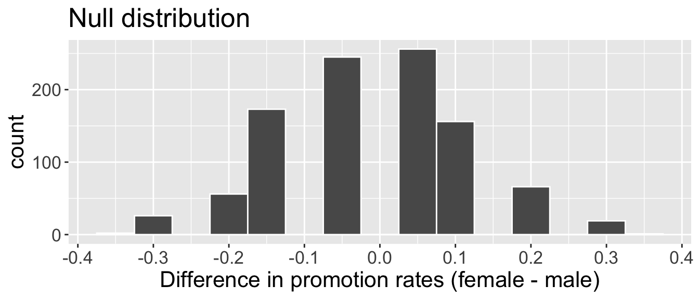
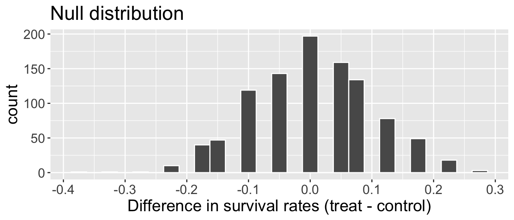

sex decision
1 male promote
2 female not promote
3 male promoteRandomization tests
Test of independence
Participants in the study were 48 bank supervisors who identified as male and were attending a management institute at UNC in 1972. Each supervisor was asked to assume the role of personnel director of a bank.
Each person given a file to judge whether the person in the file should be promoted
The files were identical, except half of them indicated that the candidate was male, and the other half were indicated as female
Files were randomly assigned to bank managers
Research question: Are individuals who identify their sex as female discriminated against in promotion decisions made by their managers who identify as male?
Step 1
\(H_{0}:\)
\(H_{A}:\)
Step 2
discrimination |>
slice(1:3)| sex | not promote | promote | total |
|---|---|---|---|
| female | 10 | 14 | 24 |
| male | 3 | 21 | 24 |
| total | 13 | 35 | 48 |
Obtain some relevant/useful summary statistics:
\(\alpha=\)
Step 3
Simulate under \(H_{0}\):
Write down “promote” on ______ cards and “___________” on ______ cards.
Then repeat the following \(B\) times:
Shuffle the cards
Deal out a stack of _______ to represent _______ candidates and ________ to represent _______ candidates.
set.seed(100)
n <- nrow(discrimination)
n_f <- sum(discrimination$sex == "female")
n_m <- sum(discrimination$sex == "male")
decisions <- discrimination$decision
B <- 1000
diff_props_null <- rep(NA, B)
for(b in 1:B){
shuffled <- sample(decisions, n)
rand_f <- shuffled[1:n_f]
rand_m <- shuffled[-c(1:n_f)]
p_f_sim <- mean(rand_f == "promote")
p_m_sim <-mean(rand_m == "promote")
diff_props_null[b] <- p_f_sim - p_m_sim
}
- p-value:
Step 4
- Decision:
- Conclusion:
- Possible error:
Test for difference in proportions
An experiment was conducted, consisting of two treatments on 90 patients who underwent CPR for a heart attack and subsequently went to the hospital. Each patient was randomly assigned to either:
- treatment group: received a blood thinner
- control group: did not receive a blood thinner
For each patient, the outcome recorded was whether they survived for at least 24 hours.
Research question: Is the blood thinner treatment effective for patients who undergo CPR after a heart attack??
Step 1
\(H_{0}:\)
\(H_{A}:\)
Step 2
cpr |>
slice(1:3) group outcome
1 treatment died
2 control died
3 control survived| group | died | survived | total |
|---|---|---|---|
| control | 39 | 11 | 50 |
| treatment | 26 | 14 | 40 |
| total | 65 | 25 | 90 |
Obtain some relevant/useful summary statistics:
\(\alpha=\)
Step 3
Simulate under \(H_{0}\):
Write down “___________” on ______ cards and “___________” on ______ cards.
Then repeat the following \(B\) times:
Shuffle the cards
Deal out a stack of _______ to represent _______ candidates and ________ to represent _______ candidates.
set.seed(310)
n_t <- sum(cpr$group == "treatment")
n_c <- sum(cpr$group == "control")
cards <- cpr$outcome
B <- 1000
diff_props_null <- rep(NA , B)
for(b in 1:B){
shuffled <- sample(cards)
treat_sim <- shuffled[1:n_t]
control_sim <- shuffled[-c(1:n_t)]
p_t_sim <- mean(treat_sim == "survived")
p_c_sim <- mean(control_sim == "survived")
diff_props_null[b] <- p_t_sim - p_c_sim
}
- p-value:
Step 4
- Decision:
- Conclusion:
- Possible error: